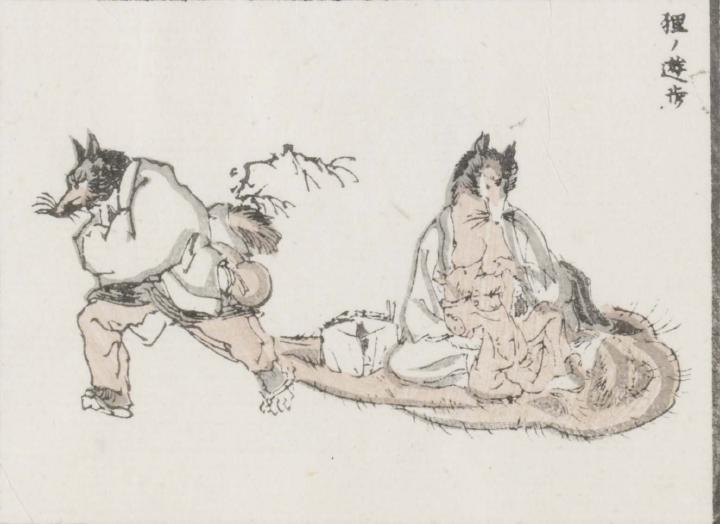

狸；タヌキ

雄狸が、大きく垂れ広がった陰嚢の上に雌狸と子狸を載せて歩いている。雄狸は中国風の庶民風の装束をまとい、腰にひょうたんをつるしている。雌狸は胸元を肌蹴て、抱きかかえた子狸に乳をふくませている。
著作者：牧墨僊／出典：親書誌：U426_nichibunken_0097：滑稽洒落狂画苑；コッケイシャレキョウガエン／日付：2007／資源識別子：U426_nichibunken_0097_0032_0000
Copyright (c)2010- International Research Center for Japanese Studies, Kyoto, Japan. All rights reserved.